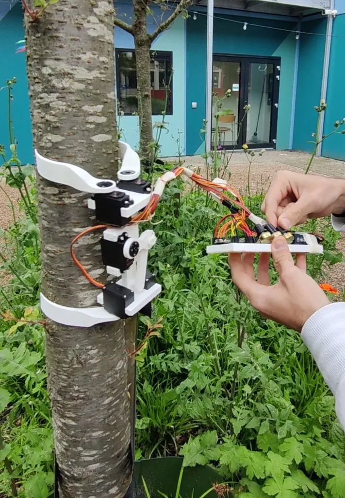

Bioplastic trunk climber
An early design made to go up and down a trunk: two pairs of printed bioplastic grippers, hobby servos. A straight trunk is the job. When that trunk becomes branches, this machine cannot follow.
A retired prototype, June 2024. Mechanism in the lab, then a tree at VU StartHub. Made for trunk travel, not for the canopy. More mobility is the next problem.
What it does
After a first shape on a desk and a gripper that only hugs, this one is meant to climb. Bioplastic on bark, not metal. Up and down a single trunk.
That is a real, narrow job. Trees are not poles. When the trunk forks or a side branch appears, this prototype cannot switch onto it. That is why the design is retired, and why later work — including Gibbon Bot — has to add mobility, not a stronger clamp on a cylinder.
In the lab
June 2024. The climber on the bench: printed gripper pairs, servos, a cable back to a breadboard. You can see the geometry. This clip is the mechanism, not a climb.
On a tree
StartHub, 12 June 2024. Same idea on a live trunk, handheld control still on the wire. The test is whether the grippers hold and the body can sit on bark. It does not show a path into the crown.

Work with us
Printed mechanics that have to touch a plant, firmware for cheap servos: firmware and CAD. Email services@olivabot.com.